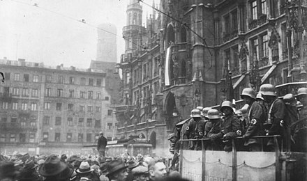

Following the outbreak of World War I in 1914, life in Munich became very difficult, as the Allied blockade of Germany led to food and fuel shortages. During French air raids in 1916, three bombs fell on Munich.
In March 1916, three separate aircraft-engine and automobile companies joined to form 'Bayerische Motoren Werke' (BMW) in Munich.
After World War I, the city was at the centre of substantial political unrest. In November 1918, on the eve of the German revolution, Ludwig III and his family fled the city. After the murder of the first republican premier of Bavaria Kurt Eisner in February 1919 by Anton Graf von Arco auf Valley, the Bavarian Soviet Republic was proclaimed. When Communists took power, Lenin, who had lived in Munich some years before, sent a congratulatory telegram, but the Soviet Republic was ended on 3 May 1919 by the Freikorps. While the republican government had been restored, Munich became a hotbed of extremist politics, among which Adolf Hitler and the National Socialists soon rose to prominence.
Munich's first film studio (Bavaria Film) was founded in 1919.[40]
In 1923, Adolf Hitler and his supporters, who were concentrated in Munich, staged the Beer Hall Putsch, an attempt to overthrow the Weimar Republic and seize power. The revolt failed, resulting in Hitler's arrest and the temporary crippling of the Nazi Party (NSDAP). The city again became important to the Nazis when they took power in Germany in 1933. The party created its first concentration camp at Dachau, 16 km (9.9 mi) north-west of the city. Because of its importance to the rise of National Socialism, Munich was referred to as the Hauptstadt der Bewegung ("Capital of the Movement"). The NSDAP headquarters were in Munich and many Führerbauten ("Führer buildings") were built around the Königsplatz, some of which still survive.
In March 1924, Munich broadcast its first radio program. The station became 'Bayerischer Rundfunk' in 1931.[41]
The city was the site where the 1938 Munich Agreement signed between Britain and France with Germany as part of the Franco-British policy of appeasement. The British Prime Minister Neville Chamberlain assented to the German annexation of Czechoslovakia's Sudetenland region in the hopes of satisfying Hitler's territorial expansion.[42]
The first airport in Munich was completed in October 1939, in the area of Riem. The airport would remain there until it was moved closer to Freising in 1992.[43]
On November 8, 1939, shortly after the Second World War had begun, a bomb was planted in the Bürgerbräukeller in Munich in a attempt to assassinate Adolf Hitler during a political party speech. Hitler, however, had left the building minutes before the bomb went off. On its site today stands the GEMA Building, the Gasteig Cultural Centre and the Munich City Hilton Hotel.[44]
Munich was the base of the White Rose, a student resistance movement from June 1942 to February 1943. The core members were arrested and executed following a distribution of leaflets in Munich University by Hans and Sophie Scholl.
The city was heavily damaged by Allied bombing during World War II, with 71 air raids over five years.